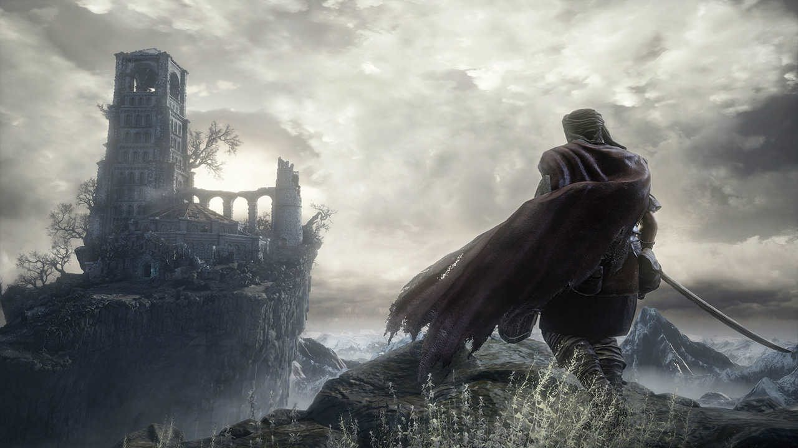
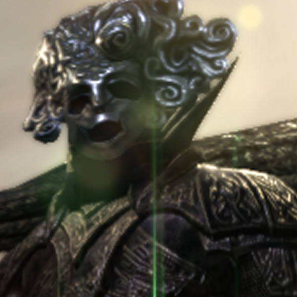

12 Gennaio 2026
L'Inizio di una Nuova Era

Benvenuti nel nuovo hub centrale di TheLastKamatt. Questo spazio non servirà solo come archivio,
ma come vero e proprio "Diario di Sviluppo". Qui condividerò pensieri sparsi che non trovano posto nei video,
anteprime delle prossime analisi e sketch preparatori.
L'obiettivo è creare un filo diretto, senza l'algoritmo di mezzo. Solo voi, io e l'abisso.
Focus Del Giorno
Il Canale YouTube
Il cuore pulsante del progetto risiede su YouTube. È lì che le mie analisi prendono vita attraverso il montaggio e la voce.
Attualmente stiamo lavorando a una nuova serie di Deep Dive sulla lore di Elden Ring, cercando collegamenti
che molti hanno ignorato.
Il canale sta evolvendo graficamente, abbandonando il vecchio stile per abbracciare questa nuova estetica
Dark Fantasy/Steampunk che vedete qui sul sito.
Vai al Canale

Il nuovo emblema del canale.